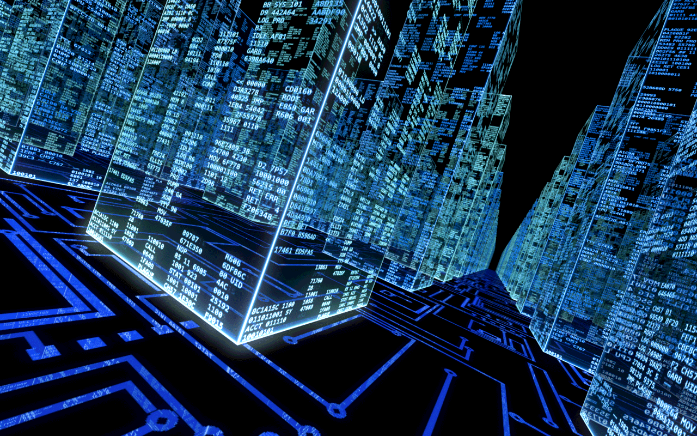

Inside The Gibson
How a 1995 film's most famous fake computer became a native macOS screensaver, a multi-display video wall and a small game, in about ten thousand lines of Objective-C++, with no game engine.

01The big picture
One shared 3D world, three ways in.
Everything you see, whether the screensaver, the Preview window, the Arrange Displays editor or the game, is the same SceneKit scene: a 60 × 60 grid of glass towers over a circuit-board floor. What differs is who drives the camera and which window shows it.
config.txt.SceneKit, not a game engine
The scene graph, Metal renderer, HDR bloom and motion blur all come from Apple's SceneKit. The original Irrlicht engine is gone. No dependencies beyond the macOS SDK.
Objective-C++
AppKit and SceneKit are Objective-C APIs, and the maths (splines, projections, route planning) is plain C++ with simd vectors. .mm files mix the two freely.
Plain Makefiles
No Xcode project. clang++ builds the app, the extension and a few dev tools; the Makefile also signs, installs and registers them.
Measured against the film
Colours, timings, fonts and sounds were tuned against frames and audio captured from Hackers. Many comments cite what was measured.
02Build and ship
From make to the System Settings screensaver list.
src/Makefile does all the work (the top-level Makefile just forwards to it). The interesting target is install-saver:
- Compile the shared core, the app sources and the extension sources with
clang++ -fobjc-arcfor arm64. - Assemble
dist/TheGibson.app, withTheGibson.appexinsideContents/PlugIns/andmedia/copied into the resources. - Copy it to
/Applicationsand sign it with the best identity in your keychain (Developer ID, then Apple Development, then ad hoc). - Register the extension with
pluginkit -a, restartWallpaperAgentso the new build is the one that runs, and remove any oldGibson.saver.
The extension declares itself to macOS through TheGibson.appex.plist:
<key>NSExtensionPointIdentifier</key> <string>com.apple.screensaver</string>
<key>NSExtensionPrincipalClass</key> <string>GibsonScreenSaverExtension</string>
<key>NSExtensionContextClass</key> <string>ScreenSaverExtensionContext</string> <!-- without it: black screen -->
<key>ScreenSaverViewControllerClass</key> <string>GibsonScreenSaverViewController</string>Why an extension? Classic .saver bundles run inside Apple's legacyScreenSaver process, which has grown unreliable. Shipping as an ExtensionKit .appex is how Apple's own screensavers work now: The Gibson runs in its own sandboxed process and sits with Apple's savers in System Settings, not under "Other". make legacy-saver still builds the old format.
Other targets worth knowing
| Target | What it does |
|---|---|
make run-app | Opens the freshly built app (settings window) without installing. |
make play | Opens the app straight into the game (--game). |
make scn | A bare preview window, scn_preview, which also renders test shots offscreen. |
make bench | Runs the real saver view full screen on every display and reports CPU, frame rate and memory, with switches to turn effects off one at a time. |
make enable-saver | Sets The Gibson as the active screensaver by editing macOS's wallpaper store (backs it up first). |
03Building the city
GibsonSCNScene.mm: 3,600 towers, a floor, 280 light pulses.
The towers
One mesh, media/towers.obj, is loaded with Model I/O and placed 3,600 times on a 30-unit grid, scaled 1.6× wide and 1.265× tall (15% taller than the original). A coin flip picks a "dark" or "light" texture set for each one.
The glowing text animates by flipbook: 8 prebuilt materials per tower type, one per texture frame (towers1-1…8.png, towers2-1…8.png). Every 200 ms the shared geometry's material array is pointed at the next frame:
- (void)updateTowersAtTime:(NSTimeInterval)time
{
if (time - _lastTowerSwap < TEXT_ANIM_WAIT) // 0.200 s
return;
_lastTowerSwap = time;
_towerFrame = (_towerFrame + 1) % TOWER_TEXTURE_COUNT;
_darkTowers.materials = @[ _darkTowerMats[_towerFrame] ];
_lightTowers.materials = @[ _lightTowerMats[_towerFrame] ];
_darkMirror.materials = _darkTowers.materials; // the reflection follows
_lightMirror.materials = _lightTowers.materials;
}Why prebuilt materials? Assigning a new image to a live material makes SceneKit re-process the bitmap every swap. Pointing at an already-built material is nearly free. This, plus one node per tower instead of a flattened clone (so off-screen towers get culled), halved the screensaver's CPU use.
Glass that shifts colour
The tower textures are greyscale; the colour is added by a small Metal shader modifier injected into SceneKit's fragment shader. It mixes electric blue and cyan from three inputs: how edge-on you see the face, a slow wave drifting across the city, and the tower's world position, so neighbours aren't in lockstep. The brightest texels go pale cyan-white like the film's highlights.
// gibson_tower_hue_shader(): runs per pixel on every tower
float3 gWorld = (scn_frame.inverseViewTransform * float4(_surface.position, 1.0)).xyz;
float gFacing = abs(dot(normalize(_surface.normal), normalize(_surface.view)));
float gEdgeOn = pow(1.0 - gFacing, 1.5);
float gWave = 0.5 + 0.5 * sin(scn_frame.time * 0.5 + phase + gWorld.x * 0.035 + gWorld.z * 0.045);
float gMix = smoothstep(0.15, 0.85, 0.75 * gWave + 0.55 * gEdgeOn);
float3 gTint = mix(float3(0.10, 0.32, 1.0), float3(0.38, 0.88, 1.0), gMix); // blue → cyan
float gHot = smoothstep(0.75, 1.4, max(_output.color.r, max(_output.color.g, _output.color.b)));
gTint = mix(gTint, float3(0.70, 0.97, 1.0), gHot * 0.75);
_output.color.rgb *= gTint;A floor that reflects only through its traces
In the film the floor is dark and opaque, and only the glossy circuit traces mirror the towers. SceneKit's built-in floor reflection can't be masked per pixel, so the code fakes it:
- A second copy of every tower hangs upside down under the floor (
tower-mirror, y-scale −1), sharing the real towers' materials so it animates too. - The floor is drawn over it. Its transparency mask is the trace texture run through a Core Image tone curve: the dark gaps are fully opaque, and the trace cores are at most 27.5% see-through.
- Fixed rendering orders (mirror −10, floor −5, towers 0) stop SceneKit's distance sort from putting the mirror on top.
- Mirrored towers beyond 300 units are replaced by "nothing" through a level-of-detail entry with a
nilgeometry. Through thin traces, distant reflections were invisible anyway, and this halved the GPU's work.
Pulses and fog
280 streaks (pulse.obj, stretched 10× long, additive blending at 4× intensity so they blow out into the bloom) race along the streets at 120–200 units per second and respawn somewhere random when they leave the city. Fog fades everything to black from 480 to 820 units out, so you never see the city's edge.
04The film look
HDR, bloom, saturation, motion blur, and rendering fewer pixels on purpose.
The "grade" lives on the camera (GibsonSCNCamera.mm). Materials are unlit (SCNLightingModelConstant) and pushed past 1.0 brightness, so the HDR pipeline's bloom catches the text, edges and pulses:
cam.fieldOfView = 72.0;
cam.wantsHDR = YES;
cam.bloomThreshold = 0.9; // only the hottest pixels glow
cam.bloomIntensity = 1.3;
cam.bloomBlurRadius = 18.0;
cam.saturation = 1.35;
cam.motionBlurIntensity = 0.4;The 32 W → 4 W story
Across three displays (two 5K, one built-in), the screensaver first drew about 32 W of GPU power. Three changes brought it to about 4 W:
Render fewer pixels: 32 → 8.4 W
SceneKit sizes its HDR, bloom and blur buffers from the view's size in points, so lowering the layer's scale did nothing. Instead, the saver view shrinks its bounds: the SCNView inside is smaller in points but still covers the display, and the compositor scales it up. render_scale (default 1 pixel per point) controls it.
Cull the fake reflection: 8.4 → 3.9 W
The 300-unit limit on mirrored towers described above.
Tick once per frame
With several displays, every view calls the scene's update. Only the first call in a frame moves anything (see §06).
The film's CG was soft anyway, so rendering below Retina resolution is close to invisible.
05The flight path
41 waypoints from the original, flown lower, smoother and in sync with the music.
fly_path.h holds the original Irrlicht flythrough's 41 waypoints. The last two repeat the first, so the camera flies a closed loop over the 39 unique points with a cardinal (Hermite) spline:
// gibson_spline_at_raw(dt): dt is position along the path in waypoint units
const float h1 = 2*u*u*u - 3*u*u + 1; // Hermite basis
const float h2 = -2*u*u*u + 3*u*u;
const float h3 = u*u*u - 2*u*u + u;
const float h4 = u*u*u - u*u;
t1 = (p2 - p0) * tightness; // tangents from the neighbours, tightness 0.5
t2 = (p3 - p1) * tightness;
return p1*h1 + p2*h2 + t1*h3 + t2*h4;Fly low
The film's camera hugs the street at about a sixth of tower height. gibson_low_flight_y squashes the authored heights (6–30) down to about 4–11, then blends back to full height above 28 so the rooftop swoop still clears the towers.
Look ahead, bank into turns
The camera sits 150 ms behind the point it looks at. Its yaw rate is measured from the spline's tangent, smoothed, and turned into a roll (bank_strength, capped at bank_max_degrees, lagged by bank_smoothing).
Timed to the music
The rooftop swoop tops out at path position 16.5. The flight starts at 16.5 − swoop_at × speed, so the swoop peaks 33 s in, on a cue in the Hackers suite that plays from the start.
Loop, don't ping-pong
The path used to reverse at its end, and the look-at point turned around before the camera did. That showed as a "reset" at about 1:29. The cyclic spline fixed it.
06One frame, start to finish
Who calls what, on which thread.
- (void)tickAtTime:(NSTimeInterval)time
{
/* Every view showing the world calls this once per frame; the first one
in a frame moves everything, the rest have nothing to do. */
if (time < _lastTime + 1.0 / 240.0 && time != _startTime)
return;
const float delta = std::min(0.1, time - _lastTime);
_lastTime = time;
id<GibsonCameraDriver> driver = _cameraDriver;
if (!driver || ![driver driveCamera:_flyCam.cameraNode atTime:time delta:delta])
[_flyCam updateAtTime:time startTime:_startTime];
[self updateTowersAtTime:time];
[self updatePulses:delta];
}The GibsonCameraDriver protocol is the seam that made the game possible without touching the screensaver: anything that sets world.cameraDriver gets to place the camera each frame. Return NO and the normal flythrough carries on, which is exactly what the game's title screen does.
The world itself is a shared singleton (sharedWorldForPreview:mediaURL:). Every display's view points at the same SCNScene, so the city is built once and moves once per frame, however many displays there are.
07Living inside macOS
The screensaver host's quirks, as discovered.
When the screensaver starts, macOS launches the extension and asks GibsonScreenSaverViewController for a view, once per display. Each gets a GibsonSaverView, which wraps an SCNView showing the shared world. Much of that file deals with undocumented host behaviour:
- Never told to stop. The host doesn't call
stopAnimationand keeps the process alive between sessions. Rendering starts onviewDidMoveToWindowand thecom.apple.screensaver.didstartdistributed notification, and stops onwillstop/didstopor when the view leaves its window. - Which display am I on? The view lives in a remote window whose
screenisnilon secondary displays.-hostScreenmatches the window's origin against the display frames, falling back to a unique size match. - Born at 0 × 0. The view is attached to a zero-size window and resized later, so it sizes itself by autoresizing, as Apple's own screensavers do.
- The black display. The SCNView's display link follows its window's screen. When the host's flipped coordinates put the window on no screen at all, it never drew. The fix re-homes the window.
- Quiet thumbnails. System Settings' little preview is also a full instance. Music plays only once the view is wider than 400 points.
Debugging a process you can't attach to: everything logs through os_log with subsystem org.hackthegibson.TheGibson and public strings, plus a heartbeat with frame counts. Watch it live withlog stream --predicate 'subsystem == "org.hackthegibson.TheGibson"'
08Many displays, one view
GibsonWall.h: each display is a window onto the same scene.
With span_displays = yes, the displays act like windows in a wall: a tower crossing a bezel continues on the next display at the same size and angle. Each display renders its own slice of one shared view using a generalised perspective projection (an off-axis frustum through the panel's four corners, seen from a common eye).
- Millimetres, not points. A 5K display and a built-in Retina display show different physical sizes per point, so the wall is laid out in mm from
CGDisplayScreenSize. Objects stay the same physical size across a seam. - Guess, then let you correct. By default, display centres follow the System Settings arrangement. Arrange Displays… (GibsonArrange.mm, the largest file) lets you drag each panel to where it physically sits, set tilt and swivel (it can even read a MacBook's lid angle), enter bezel widths, and show an alignment pattern over the live city on the real displays. Positions are saved as
display_<UUID>lines inconfig.txt. - In SceneKit terms: each display gets a child camera node of the shared rig, turned to face its panel squarely (
view.basis) and given a customprojectionTransform.
// GibsonWall.h — off-axis perspective (OpenGL clip conventions, as SCNCamera expects)
// l, r, b, t: the panel's edges at unit distance from the eye
return simd_matrix(
simd_make_float4(2n/(r-l), 0, 0, 0),
simd_make_float4(0, 2n/(t-b), 0, 0),
simd_make_float4((r+l)/(r-l), (t+b)/(t-b), -(f+n)/(f-n), -1), // ← the off-centre shift
simd_make_float4(0, 0, -2*f*n/(f-n), 0));09Hack The Gibson
GibsonGame.mm: the same city, but you choose the turns.
GibsonGameController opens a borderless window on every display (the primary one also holds the menu and the HUD), points them at the shared world, and installs itself as the world's cameraDriver.
Two threads, one lock
Keys arrive on the main thread; the camera is driven on SceneKit's render thread. The handful of values they share (requested turn, climb/dive held, "start", "show the garbage file", "leave", HUD readouts) sit behind an os_unfair_lock. Everything else belongs to exactly one thread.
- (void)control:(NSString *)name down:(BOOL)down // main thread
{
if (down && [name isEqualToString:_bindings[kActLeave]]) { [self returnToTitle]; return; }
os_unfair_lock_lock(&_lock);
if ([name isEqualToString:_bindings[kActUp]]) _climb = down;
else if ([name isEqualToString:_bindings[kActDown]]) _dive = down;
else if (down) {
if ([name isEqualToString:_bindings[kActLeft]]) _pendingTurn = kTurnLeft;
else if ([name isEqualToString:_bindings[kActRight]]) _pendingTurn = kTurnRight;
}
os_unfair_lock_unlock(&_lock);
}Flying a grid instead of a spline
The streets form a perfect grid (GibsonCity.h: blocks of 30, towers 7.3 from centre to face). The flight is a list of corners, _nodes, plus the distance travelled, _s. Each frame:
- Plan ahead.
extendRoute:adds corners until the route reaches 22 units past the camera. Each new corner uses your last A/D press (consumed), else straight on. At the city's edge it turns back inwards. - Smooth it. The camera's position is the average of route points from 7 behind to 7 ahead, which rounds right angles into curves. It looks at a point 14 ahead. Yaw, bank, altitude and pitch each ease towards their targets with exponential smoothing (
1 − e^(−dt/τ)), so nothing snaps. - Altitude. Holding W/S moves a target height (3–80) at 16 units per second; the camera eases after it and tips its nose down to look over the rooftops when high.
Modes and drive states
The controller has three UI modes (title, options, playing) and the render thread has a drive state. Pressing Q while flying returns to the title, but the drive state stays Free, so the flight carries on hands-off behind the menu, and Start Game simply resumes.
Typing a word with keys that also steer
"garbage" contains an a and an s, which are turn-left and dive. So letters that continue the word are held back instead of acting. If the word breaks off (a wrong letter, or 1.5 s pass), the held keys are replayed as controls. Type the whole word and no stray turn happens.
10The garbage file
GibsonGarbage.mm: the film's scrolling directory, on the side of a tower.
The approach
beginGarbageAtTime: picks a tower beside the street at least 70 units ahead, on a random side, and sets up the move:
- Approach (7–13 s, depending on speed): a cubic ease along the street while the camera drifts to the far side and rises to the file's height (from 40% of the way), then turns to face it (from 55%).
- The tower fades in from an ordinary tower: its glow dims and its faces darken from 15% to 75% of the approach, and the directory lists fade in from 35% to 90%. Every face carries dark plates and decoy lists scrolling at their own speeds, "as if it were filtering down to matches".
- At 90% the real list starts slowing. Push (2.4 s) eases in until the list fills about 85% of the view, squared up. Hold waits for Q.
- On several displays the file is framed on one display, picked at random: the camera rig is turned so that display's camera faces the file squarely, and shifted so the file sits at the centre of that display's off-axis view. If fitting it would put the camera past the far side of the street, the file is drawn smaller instead.
How the list is drawn
The list is a single plane with a texture, not 3D text. The 32 names (from the film, misspellings and all, with GARBAGE twice) are drawn once with AppKit into a tall strip image, 1024 px wide with 48 px per line. The plane shows 24 lines of it, and scrolling is just moving the texture: contentsTransform with wrap-around.
The film's list doesn't glide: each name jumps to the next line. So the offset is floored to whole lines, at 8 lines per second.
- The stop eases out to a resting line chosen so GARBAGE lands on row 11, just above the middle.
- Then six still frames, rendered on a background queue while it slows: the selection with 0–4 file boxes revealed (0.135 s apart), plus a "blink off" frame. The material swaps between them. Timings were measured from the clip at 120 fps.
- Staying on top of the glass. SceneKit draws the transparent tower glass after the plane whatever the rendering order, which would cover it. So the list writes depth wherever there's ink and throws away empty pixels in a one-line fragment shader:
if (_output.color.a < 0.06) discard_fragment();. The tower shows between the letters but can't draw over them.
Fonts
The film's lettering is a stretched Eurostile Extended / Microgramma, both commercial. GibsonFonts.mm registers fonts for this process only (CTFontManagerRegisterFontsForURL, process scope) from ~/Library/Application Support/TheGibson/fonts/ first, then the bundled Michroma (SIL OFL), then falls back to the system font. Each gets a little extra horizontal stretch, or a stroke to thicken Michroma's single weight.
11Music and sound
A soundtrack you supply, and sound effects made from sine waves.
The soundtrack
Opt-in (music_enabled). Loops your MP3 with AVFoundation while a full-size session runs. One shared player per process, so several displays don't play it several times.
Synthesized effects
Nothing is sampled. The film's selection trill and blink pulse were analysed from spectrograms and rebuilt as sums of gated sine partials, rendered into PCM buffers at startup and played on an AVAudioEngine.
The select sound is a 25 Hz trill: two square-ish beeps (1755 Hz with odd harmonics, and 4547 Hz) alternating every 20 ms, then soft-clipped with tanh for some bite. The pulse layers five tones with their own burst patterns, stretched 1.85× to fit the game's slower blink. A raised-cosine gate shapes every burst so the edges don't click:
static double gibson_gate(double t, double start, double length, double edge = 0.0025)
{
const double u = t - start;
if (u < 0 || u > length) return 0;
if (u < edge) return 0.5 - 0.5 * cos(M_PI * u / edge); // fade in
if (u > length - edge) return 0.5 - 0.5 * cos(M_PI * (length - u) / edge); // fade out
return 1;
}Run TheGibson --write-sounds <dir> to save both as WAV files and listen.
12Settings
One plain-text file, read by every part.
gibson_settings.cpp is dependency-free C++. It parses key = value lines from ~/Library/Application Support/TheGibson/config.txt, creates the file from a commented template on first run, adds new keys to older files, and rewrites a single key's line in place (keeping your comments) when the app or the game changes something. gibson_settings_raw("any_key") reads keys the core doesn't know about, which is how the game stores its bindings.
| Group | Keys |
|---|---|
| Flight | fly_speed bank_strength bank_max_degrees bank_smoothing swoop_at |
| Displays | span_displays render_scale display_<UUID> bezel_<UUID> |
| Sound | music_enabled music music_volume sfx_volume |
| Game | key_up key_left key_down key_right key_leave_file garbage_word show_hud |
| Debug | show_timer |
The screensaver re-reads the file each time it starts, so changes apply at the next session.
13Tools and tricks
How the look was made, and how it's tested without staring at a screensaver.
Texture generator
Draws the 16 tower textures (8 animation frames × 2 styles) as greyscale plus alpha: bold glowing words like GARB, ELLIS and DA VINCI, drawn on a taller virtual canvas and squashed to fit the mesh's UVs so glyphs stay square. It also generates the circuit-board floor (right-angle routing, vias, two trace weights).
Reverse-engineering the floor
OpenCV over film stills: picks frames with visible traces, finds the two vanishing points to warp the floor to a top-down view, then measures trace widths, spacing and bundle sizes for the generator to match.
Offscreen renders
A preview window that can also render shots offscreen to PNG, including a --garbage harness that frames the file on a tower and grabs it at set moments.
Benchmark
Runs the real saver view on every display and reports CPU, fps and memory, with switches for effects, towers, mirror and floor. This is how the power savings were found.
Development switches
| Environment variable | Effect |
|---|---|
GIBSON_GAME_DEMO=1 | The game plays itself: start, a turn, a climb, the garbage file, leave, exit. A smoke test with no hands. |
GIBSON_BUNDLED_FONTS_ONLY=1 | Ignore your own fonts and show what everyone else sees (Michroma). |
GIBSON_GARBAGE_DUMP=dir | Save the garbage file's textures as images. |
GIBSON_TOWER_SCALE, GIBSON_FLOOR_REPEAT, GIBSON_MIRROR_DIST | Override tower footprint, floor tiling and reflection distance for test renders. |
14Code map
Every source file, roughly in reading order. Links open the files in this checkout.
| File | What's in it | Lines |
|---|---|---|
| scenekit/GibsonSCNScene.mm | The world: towers, floor, mirror, pulses, the per-frame tick | 669 |
| scenekit/GibsonSCNCamera.mm | Spline flight, banking, camera grade, flight "moments" for Arrange | 320 |
| fly_path.h | The 41 original waypoints | 54 |
| scenekit/GibsonCity.h | Grid constants shared by the game | 21 |
| scenekit/GibsonWall.h | Multi-display geometry and off-axis projection (pure maths) | 203 |
| scenekit/GibsonWallScreens.mm | Reads the attached displays and saved positions | 52 |
| gibson_settings.cpp | config.txt parsing, template, in-place writes | 551 |
| saver/GibsonSaverView.mm | The screensaver's per-display view and its host workarounds | 688 |
| saver/GibsonScreenSaverViewController.mm | Extension entry point that hands out views | 75 |
| saver/GibsonMusic.mm | The looping soundtrack | 125 |
| app/GibsonApp.mm | Settings window, Preview, launch flags | 684 |
| app/GibsonArrange.mm | Arrange Displays editor | 1,515 |
| app/GibsonGame.mm | The game: windows, menus, input, route flight, garbage sequence | 1,487 |
| app/GibsonGarbage.mm | The directory column and its frames | 408 |
| app/GibsonSFX.mm | Synthesized sound effects | 260 |
| app/GibsonFonts.mm | Film-font lookup and fallback | 84 |
| app/GibsonLidAngle.mm | Reads a MacBook's lid angle for Arrange | 43 |
A good reading path: start at initWithPreview: in GibsonSCNScene.mm, then tickAtTime:, then updateAtTime:startTime: in GibsonSCNCamera.mm. Then jump to driveCamera:atTime:delta: in GibsonGame.mm and follow the switch (_drive).
15How it got here
From a Windows screensaver to this, per the README and git history.
- The beginningJohn Serafino builds the original Gibson screensaver for Windows on the Irrlicht engine.
- The portPaul Kiernan pares it down into a windowed OS X app and opens it up (hence the left-handed coordinates and the 41 waypoints).
- SceneKit rebuildA native SceneKit screensaver, then shipped as an ExtensionKit appex inside TheGibson.app.
- The film gradeMovie-accurate colours, generated textures, the shifting glow, motion blur, low flight, tighter canyons, the circuit-board floor with trace-only reflections.
- PerformanceCPU halved (culled tower nodes, prebuilt materials), then GPU power from 32 W to 4 W.
- Displays & musicSpanning every display with Arrange Displays; an opt-in soundtrack and the swoop timed to it.
- The gameHack The Gibson: grid flight, the garbage file with film fonts and synthesized sounds, multi-display framing.
Line counts are as of commit 05cd7b2. This page is plain HTML with no network requests: open docs/how-it-works.html from the repository so the screenshot and source links resolve.